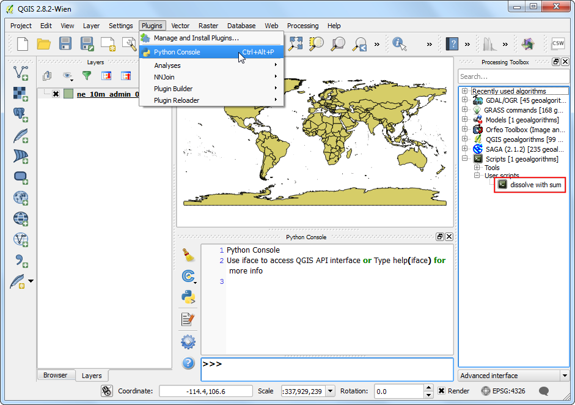
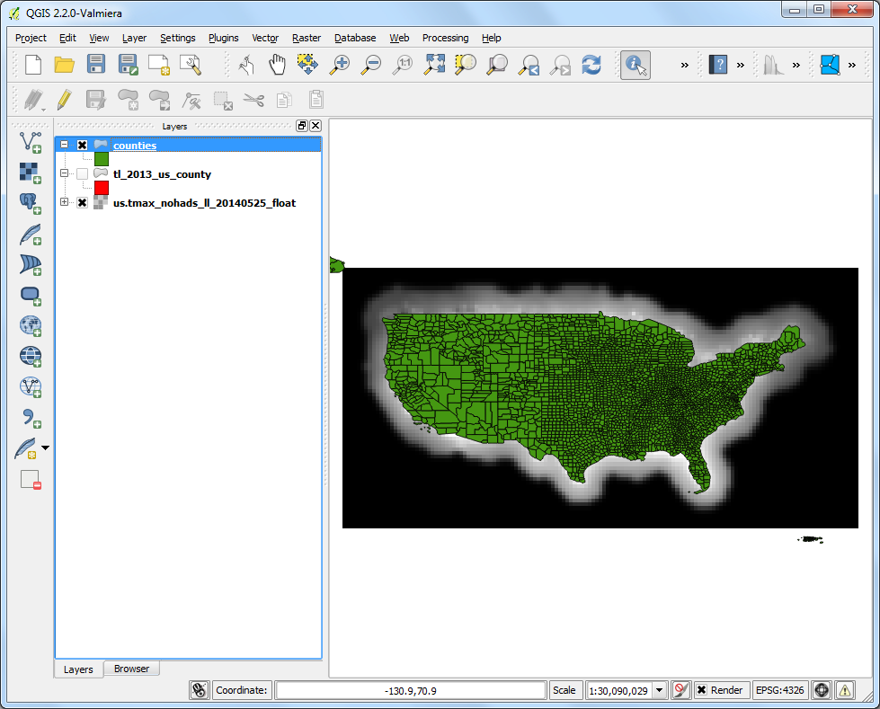
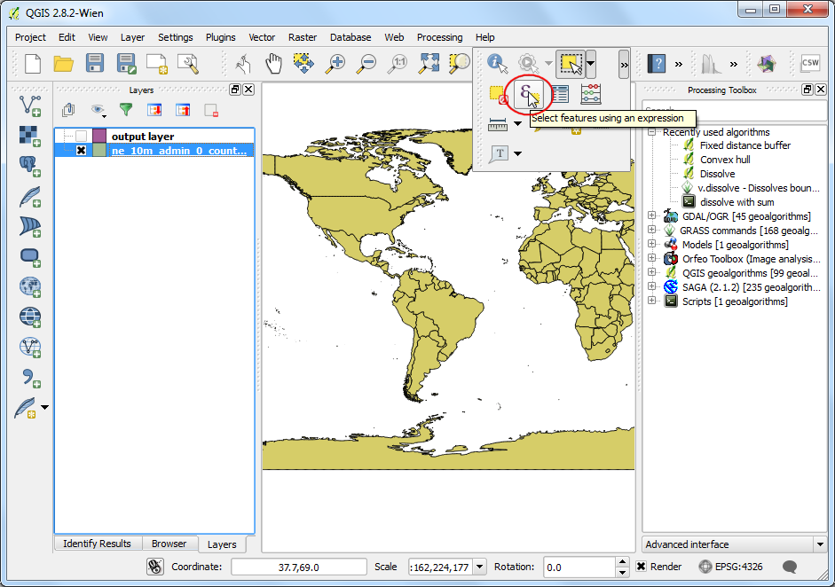
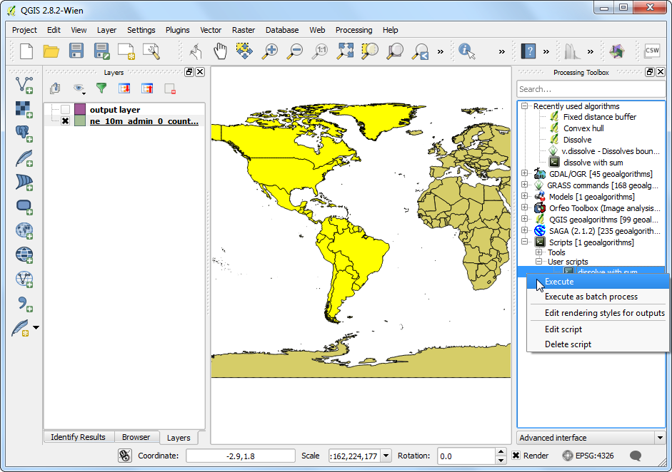
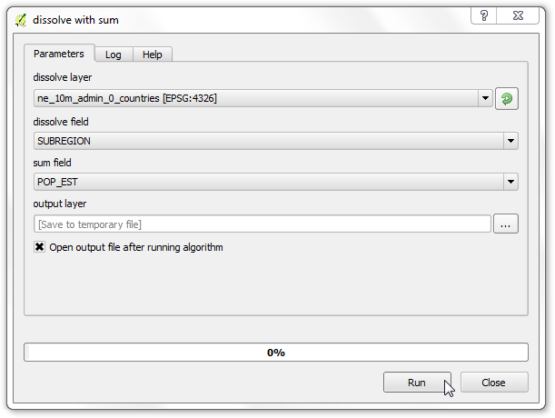

Δημιουργία κώδικα στην Python για το πλαίσιο επεξεργασίας.
[ Download PDF
A4
Letter ]
Μπορεί κανείς να γράψει αυτόνομο pygis κώδικα που να μπορεί να εκτελεστεί μέσω της κονσόλας Python στο QGIS. Με μερικά κόλπακια, μπορείτε να κάνετε τα αυτόνομα κομμάτια του κώδικά σας να εκτελούνται μέσα στο Πλαίσιο Επεξεργασίας. Αυτό έχει πολλαπλά πλεονεκτήματα. Πρώτον, παίρνοντας τα στοιχεία που εισάγει ο χρήστης και με βάση αυτά δημιουργώντας νεα αρχεία είναι σαφώς πιο εύκολο γιατί το Πλαίσιο Επεξεργασίας παρέχει μια τυποποιημένη διεπαφή χρήστη για αυτές τις λειτουργίες. Δεύτερον, το να έχετε τον κώδικά σας στην Εργαλειοθήκη Επεξεργασίας, επιτρέπει στον κώδικα να είναι μέρος από το Μοντέλο Επεκεργασίας ή να εκτελείται ως μια συνολική δουλειά με πολλαπλές εισαγωγές. Αυτή η άσκηση θα σας δείξει πως να γράψετε ένα προσαρμοσμένο κομμάτι κώδικα το οποίο θα μπορεί να είναι μέρος από το Πλαίσιο Επεξεργασίας στο QGIS.
Επισκόπηση της εργασίας
Ο κώδικάς μας θα πραγματοποιήσει μια διαδικασία διάλυσης με βάση το πεδίο επιλογής του χρήστη. Θα προσθέσει επίσης τις τιμές από ένα άλλο πεδίο για τα κατακερματισμένα χαρακτηριστικά. Για παράδειγμα., θα κατακερματίσουμε το shapefile με τα παγκόσμια δεδομένα βασιζόμενοι στο γνώρισμα SUBREGION``και θα προσθέσουμε το πεδίο ``POP_EST ώστε να υπολογίσουμε τον συνολικό πληθυσμό στην κατακερματισμένη περιοχή.
Note
Αν θέλετε να κάνετε την διαδικασία κατακερματισμού υπολογίζοντας και κάποια στατιστικά στοιχεία, μπορείτε να χρησιμοποιήσετε το πρόσθετο DissolveWithStats. Αυτός ο κώδικας είναι μια παρουσίαση για το πως να εφαρμόσετε παρόμοιες συναρτήσεις μέσω ενός Κώδικα Επεξεργασίας.
Διαδικασία
Ανοίξτε το QGIS και πηγαίνετε στο . Πηγαίνετε στο κατεβασμένο αρχείο ne_10_admin_0_countries.zip και φορτώστε το στρώμα ne_10_admin_0_countries. Πηγαίνετε στο .

Επεκτείνετε την ομάδα Scripts`στο :guilabel:`Processing Toolbox και επιλέξτε Create a new script.

- For a python script to be recognized as a Processing script, the beginning
of the script must be the specifications of the input and outputs. This will
be used to construct the user interface to run the script. You can learn
more about the format of these lines from QGIS Processing Documentation.
Enter the following lines in the Script editor. Here we are
specifying 3 user inputs: dissolve_layer, dissolve_field and
sum_field. Note that we are adding dissolve_layer after both the
field input definitions. This means that input will be pre-populated with
choice of fields from the dissolve_layer. We also specify the
output_layer as the output vector layer. Click Save button.
##dissolve_layer=vector
##dissolve_field=field dissolve_layer
##sum_field=field dissolve_layer
##output_layer=output vector

- Name the script dissolve_with_sum and save it at the default location
under folder.

- Back in the Script editor, click Run algorithm
button to preview the user interface.

- You can see that just by adding a few lines, we have a nice user interface
for the user to specify the inputs. It is also consistent with all other
Processing algorithms, so there is no learning curve involved in using your
custom algorithm.

- In the Script editor, enter the following code. You will notice
that we are using some special methods such as processing.getObject()
and processing.features(). These are convenience wrappers that make it
easy to work with data. You can learn more about these from Additional
functions for handling data
section of QGIS Processing Documentation. Click Save to save the
newly entered code and then the X button to close the editor.
Note
This script uses python list comprehensions extensively. Take a look at this
list comprehension tutorial
to get familiar with the syntax.
from qgis.core import *
from PyQt4.QtCore import *
inlayer = processing.getObject(dissolve_layer)
dissolve_field_index = inlayer.fieldNameIndex(dissolve_field)
sum_field_index = inlayer.fieldNameIndex(sum_field)
# Find unique values present in the dissolve field
unique_values = set([f[dissolve_field] for f in
processing.features(inlayer)])
print unique_values

- While writing code, it is important to be able to see errors and debug your
code. Your processing scripts can be debugged easily via the built-in Python
Console. In the main QGIS window, go to . Once the console is open, find your script in the
Processing Toolbox and double-click it to launch it.

- Select SUBREGION as the dissolve field. You may choose any
field as the sum field as the script doesn’t have any code yet
to deal with it. Click Run.

- You will see an error dialog. This is expected since the script is
incomplete and doesn’t generate any output yet.

- In the main QGIS windows, you will see the debug output from the script
printed in the console. This is useful way to add print statements and see
intermediate variable values.

- Let’s go back to editing the script by right-clicking the script and select
Edit script.

- Enter the following code to complete the script. Note that we are using the
existing dissolve algorithm in QGIS via processing using
processing.runalg() method.
# Create a dictionary to hold values from the sum field
sum_unique_values = {}
attrs = [f.attributes() for f in processing.features(inlayer)]
for unique_value in unique_values:
val_list = [ f_attr[sum_field_index] for f_attr in attrs if f_attr[dissolve_field_index] == unique_value]
sum_unique_values[unique_value] = sum(val_list)
# Run the regular Dissolve algorithm
processing.runalg("qgis:dissolve", dissolve_layer, "false",
dissolve_field, output_layer)
# Add a new attribute called 'SUM' in the output layer
outlayer = processing.getObject(output_layer)
provider = outlayer.dataProvider()
provider.addAttributes([QgsField('SUM', QVariant.Double)])
outlayer.updateFields()
# Set the value of the 'SUM' field for each feature
outlayer.startEditing()
new_field_index = outlayer.fieldNameIndex('SUM')
for f in processing.features(outlayer):
outlayer.changeAttributeValue(f.id(), new_field_index, sum_unique_values[f[dissolve_field]])
outlayer.commitChanges()

- Run the algorithm by selecting SUBREGION as the dissolve
field and POP_EST as the sum field. Click Run.
Note
The processing algorithm may take upto 10 minutes to finish depending on
your system.

- Once the processing finishes, you can use the Identify tool and
click on any polygon. You will see the newly added SUM field with the
POP_EST values from all original polygons added up.

- You will note that all other fields in the output are still present. When
you dissolve many features to create a single feature, it doesn’t make
sense to keep the original fields in the output. Go back to the
Script editor and add the following code to delete all fields
except the SUM field and the field that was used to dissolve the
original layer. Click Save button and close the window.
# Delete all fields except dissolve field and the newly created 'SUM' field.
olayer.startEditing()
fields_to_delete = [fid for fid in range(len(provider.fields())) if fid != new_field_index and fid != dissolve_field_index]
provider.deleteAttributes(fields_to_delete)
olayer.updateFields()
olayer.commitChanges()

- One of the hidden features of the Processing Framework is that all
algorithms can work on selected features of a layer. This is very helpful
when you want to run an algorithm on the subset of a layer. As our script
uses processing.features() method to read features, it will respect the
current selection. To demonstrate that, let’s make a selection first. Click
on the Select features using an expression button.

- Enter the following expression to select features from North and South
America and click Select.
"CONTINENT" = 'North America' OR "CONTINENT" = 'South America'

- You will see the selected features highlighted in yellow. Right-click the
dissolve_with_sum script and select Execute.

- Select the inputs as before and click Run.

- A new output layer will be added to QGIS. This will contain dissolved
geometries only from the selected features in the input layer. You will
also note that the output layer will contain only 2 fields as expected.

- One last but important remmaining work is to document our algorithm. The
Processing Framework has nice tools to write and access help. Go to the
Script editor and click the Edit script help
button.

- Fill in the details for different elements and click OK. Now a
detailed help will be available to all users of your script in the
Help tab when they launch the algorithm.

Below is the complete script for reference. You may modify it to suit your
needs.
##dissolve_layer=vector
##dissolve_field=field dissolve_layer
##sum_field=field dissolve_layer
##output_layer=output vector
from qgis.core import *
from PyQt4.QtCore import *
inlayer = processing.getObject(dissolve_layer)
dissolve_field_index = inlayer.fieldNameIndex(dissolve_field)
sum_field_index = inlayer.fieldNameIndex(sum_field)
# Find unique values present in the dissolve field
unique_values = set([f[dissolve_field] for f in processing.features(inlayer)])
# Create a dictionary to hold values from the sum field
sum_unique_values = {}
attrs = [f.attributes() for f in processing.features(inlayer)]
for unique_value in unique_values:
val_list = [ f_attr[sum_field_index] for f_attr in attrs if f_attr[dissolve_field_index] == unique_value]
sum_unique_values[unique_value] = sum(val_list)
# Run the regular Dissolve algorithm
processing.runalg("qgis:dissolve", dissolve_layer, "false",
dissolve_field, output_layer)
# Add a new attribute called 'SUM' in the output layer
outlayer = processing.getObject(output_layer)
provider = outlayer.dataProvider()
provider.addAttributes([QgsField('SUM', QVariant.Double)])
outlayer.updateFields()
# Set the value of the 'SUM' field for each feature
outlayer.startEditing()
new_field_index = outlayer.fieldNameIndex('SUM')
for f in processing.features(outlayer):
outlayer.changeAttributeValue(f.id(), new_field_index, sum_unique_values[f[dissolve_field]])
outlayer.commitChanges()
# Delete all fields except dissolve field and the newly created 'SUM' field
outlayer.startEditing()
fields_to_delete = [fid for fid in range(len(provider.fields())) if fid != new_field_index and fid != dissolve_field_index]
provider.deleteAttributes(fields_to_delete)
outlayer.updateFields()
outlayer.commitChanges()